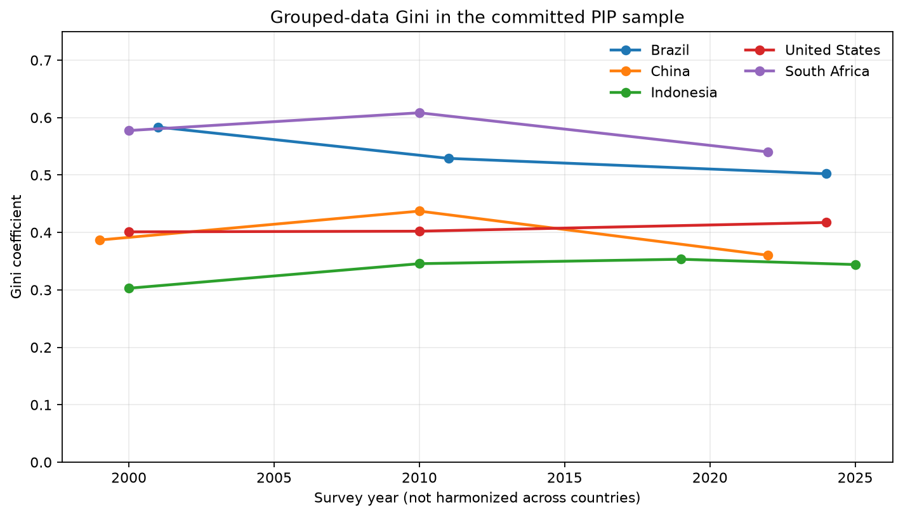
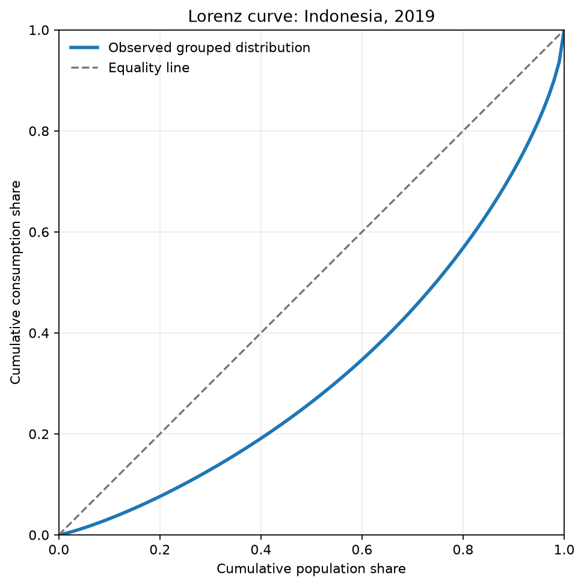
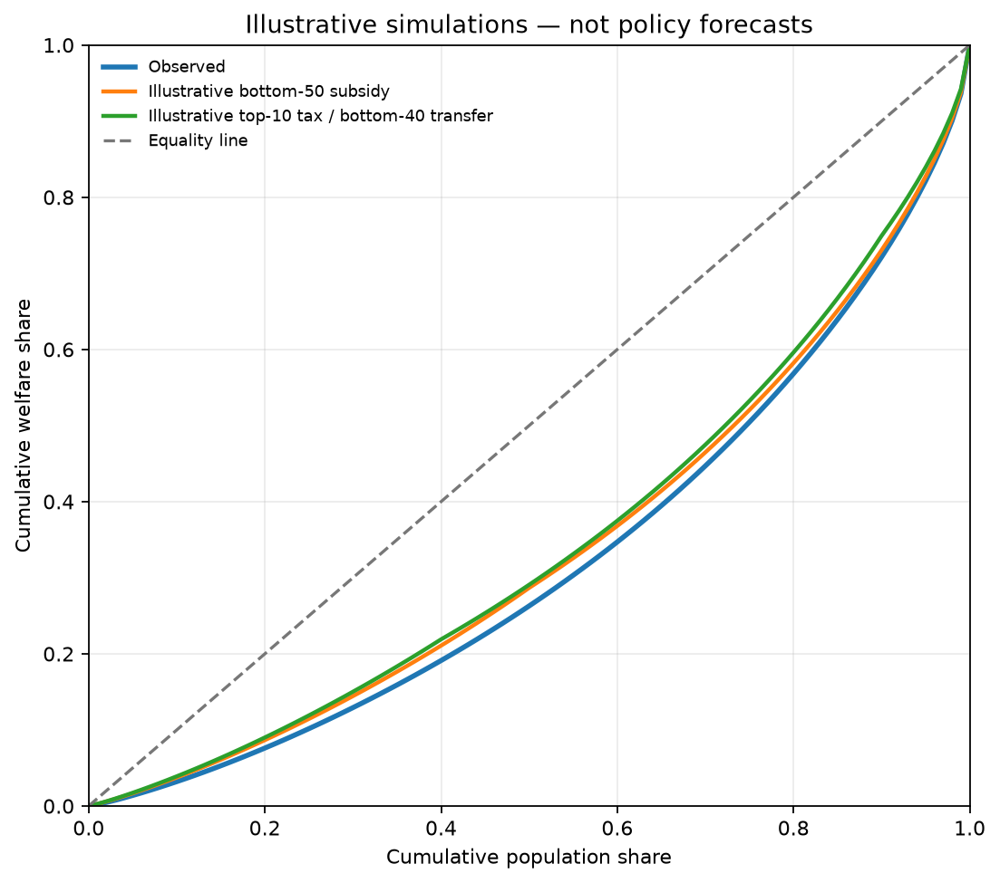

Grouped welfare inequality in five countries
This offline report demonstrates the reproducible pipeline on a committed, deterministic sample of World Bank Poverty and Inequality Platform percentile distributions.
Scope: “Welfare” is income for Brazil and the United States, and consumption for China, Indonesia, and South Africa. Cross-country differences can therefore reflect both inequality and indicator definition. Survey years are not harmonized.
Sample trajectories

The grouped-data Gini is computed as one minus twice the trapezoidal area under the Lorenz curve. Values are recomputed from 100 percentile shares, not copied from a headline indicator.
| Country | Latest year in sample | Welfare type | Gini |
|---|---|---|---|
| Brazil | 2024 | income | 0.5023 |
| China | 2022 | consumption | 0.3603 |
| Indonesia | 2025 | consumption | 0.3441 |
| South Africa | 2022 | consumption | 0.5403 |
| United States | 2024 | income | 0.4174 |
Indonesia 2019 Lorenz curve

Reporting level: national. Welfare definition: daily consumption per person in 2021 PPP dollars. Computed grouped-data Gini: 0.3534.
Illustrative simulations — not policy forecasts
These are static arithmetic counterfactuals. They omit eligibility errors, administration, financing incidence (for the subsidy), behavioral responses, general equilibrium effects, tax avoidance, and uncertainty. They must not be interpreted as predicted policy impacts.

| Scenario | Gini | Relative change | Mechanical assumption |
|---|---|---|---|
| Observed | 0.3534 | +0.0% | PIP Indonesia 2019 consumption distribution. |
| Illustrative bottom-50 subsidy | 0.3259 | -7.8% | Adds 0.5 2021 PPP dollars per person per day to percentiles 1-50; external funding is assumed. |
| Illustrative top-10 tax / bottom-40 transfer | 0.3110 | -12.0% | Applies a 10% static tax above percentile 90 and transfers all arithmetic revenue per capita through percentile 40. |
Data treatment and limitations
- Only national reporting-level rows are selected. No urban/rural series are mixed in.
- Required missing or non-numeric values fail the build; no values or percentile bins are imputed or silently dropped.
- Each distribution must contain exactly percentiles 1–100 with unique keys and non-negative welfare shares.
- The sample uses explicitly listed country-year pairs. “Latest” above means latest in this sample, not latest globally.
- Grouped percentiles approximate the underlying microdistribution; within-bin inequality is not observed.
Source: World Bank (2026), Poverty and Inequality Platform: Percentiles, version 20260922_2021, CC BY 4.0; source accessed 20 November 2026. See docs/methodology.md and data/sample/README.md for the exact selection and checksum.